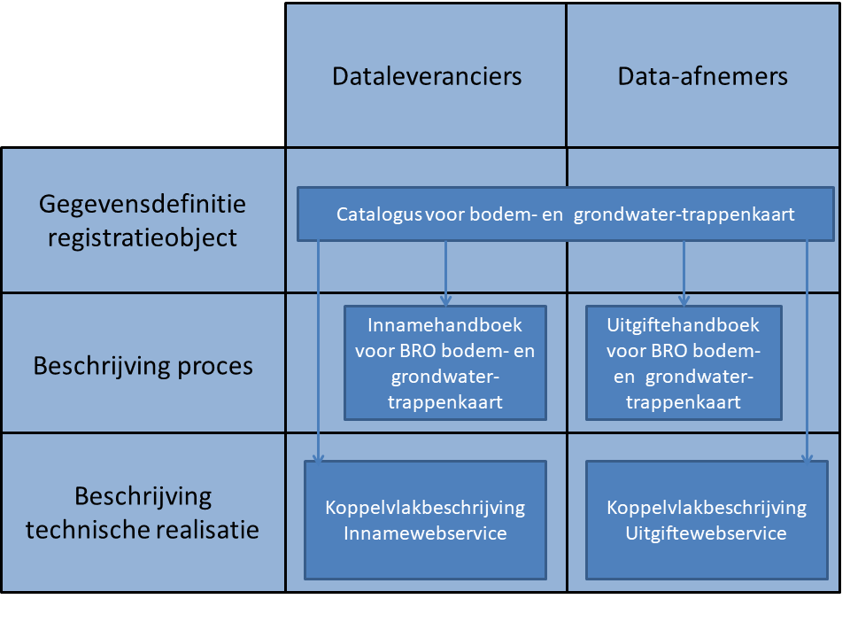
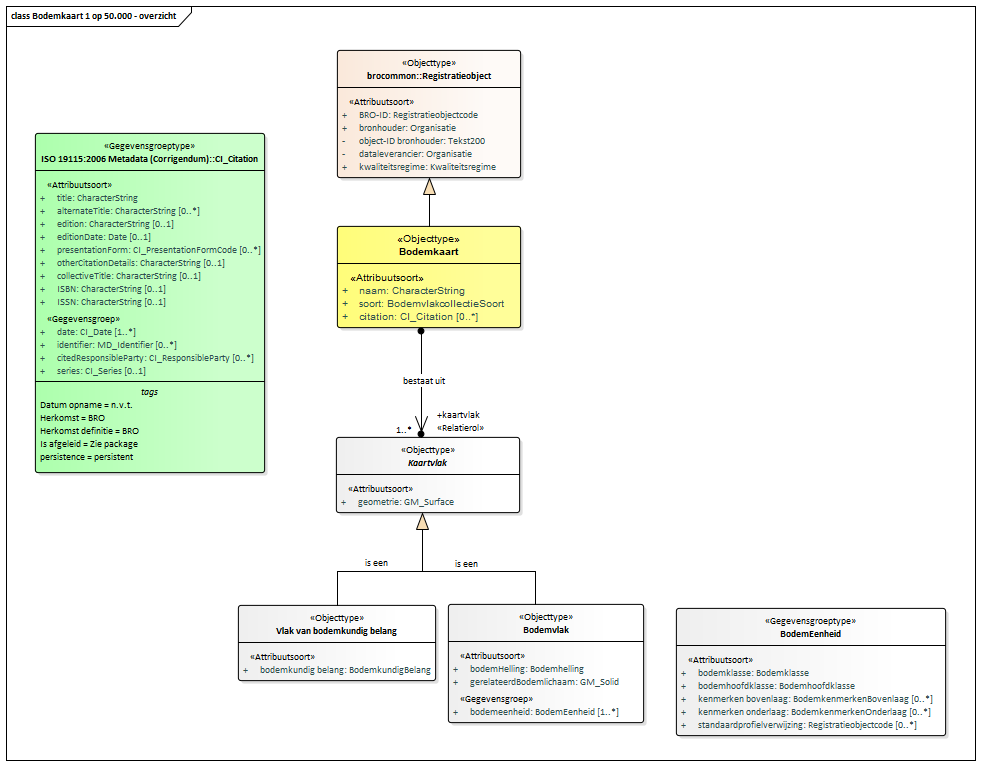

Creative Commons Attribution 4.0 International Public License (CC-BY)
Samenvatting
Deze catalogus beschrijft het model van de bodemkaart.
Status van dit document
Deze paragraaf beschrijft de status van dit document ten tijde van publicatie. Het is mogelijk dat er actuelere versies van dit document bestaan. Een lijst van Geonovum publicaties en de laatste gepubliceerde versie van dit document zijn te vinden op https://www.geonovum.nl/geo-standaarden/alle-standaarden.
Dit is de definitieve versie van het informatiemodel. Wijzigingen naar aanleiding van consultaties zijn doorgevoerd.
Dit is de vastgestelde catalogus die hoort bij Bijlage II van de Regeling basisregistratie
ondergrond en verwijst naar artikel 11 van de Regeling basisregistratie ondergrond.
De andere delen zijn als niet normatief aangeduid en voorzien van een grijze achtergrond.
1. Inleiding
1.1 Doel en doelgroep
In de basisregistratie ondergrond (BRO) wordt een aantal typen gegevens geregistreerd, de registratieobjecten.
Een catalogus is de gegevensdefinitie van een registratieobject en beschrijft welke gegevens van het object in de BRO zijn opgeslagen.
Het document is bedoeld voor alle gebruikers van de BRO en moet duidelijk maken welke gegevens er precies in het systeem zitten.
Aan aanleverende partijen moet het vertellen welke gegevens in de basisregistratie ondergrond moeten komen en aan welke eisen die moeten
voldoen, en aan afnemende partijen welke gegevens zij in de basisregistratie ondergrond mogen verwachten.
Het document is voor een breed publiek bedoeld en de informatie moet naast precies ook begrijpelijk zijn.
1.2 Totstandkoming
Een catalogus is het resultaat van een proces van standaardisatie dat geruime tijd in beslag kan nemen. De standaardisatie is een open proces waarin de belanghebbende partijen actief betrokken worden. Het eindresultaat wordt door de wetgever vastgesteld in een ministeriële regeling.
In bepaalde gevallen is de verscheidenheid aan gegevens van een object zo groot, dat er eerst deelverzamelingen worden gedefinieerd. Het standaardisatieproces wordt dan per deelverzameling doorlopen. De deelverzamelingen worden zo gekozen dat de gegevens die in de bijbehorende catalogus worden beschreven, direct na vaststelling aan de BRO kunnen worden aangeleverd. Wanneer er deelverzamelingen worden onderscheiden, komt de catalogus van het registratieobject dus gefaseerd tot stand. Omdat inzichten in de loop van de tijd kunnen wijzigen kan het aan het eind van het hele proces nodig blijken revisies door te voeren om ongewenste verschillen tussen deelverzamelingen weg te nemen.
1.3 Beheer
Een vastgestelde catalogus (zoals op wetten.nl gepubliceerd) wordt met het daarbij horende deel van het systeem van de basisregistratie ondergrond in gebruik genomen. De eerste formeel vastgestelde catalogus (zoals op wetten.nl gepubliceerd) krijgt het versienummer 1.0. Verwacht mag worden dat er na enige tijd behoefte gaat ontstaan aan gegevens die nog niet in de catalogus zijn opgenomen.
De beheerder hanteert drie typen versies voor een wijziging van een standaard. Bijvoorbeeld: versie 2.1.0 (=X.Y.Z):
X-wijzigingen Deze wijzigingen veranderen de structuur van de standaard. Hierdoor zijn X-wijzigingen niet backwards compatible.
Frequentie: maximaal 1 keer per 2 jaar.
Y-wijzigingen Dit zijn wijzigingen die niet de structuur veranderen. Dit kunnen bijvoorbeeld updates zijn of inhoudelijke aanpassingen aan objecten, attributen of waardelijsten of de reikwijdte van de standaard. Deze wijzigingen zijn backwards compatible.
Frequentie: maximaal 1 keer per jaar.
Z-wijzigingen Dit zijn in feite oplossingen van fouten of verbeteringen van technische aard. Deze wijzigingen zijn backwards compatible.
Frequentie: maximaal 2 keer per jaar.
In een jaar waarin een X-wijziging plaats vindt zullen er op hetzelfde registratieobject geen y-wijzigingen plaatsvinden. Als er een X- of een Y-wijziging in een jaar aan de orde is, wordt er geen z-wijziging gepland.
De versie van de catalogus met inleiding (zoals hier gepubliceerd) volgt voor de normatieve stukken volledig de versie op wetten.nl. Wijzigingen aan niet normatieve teksten in dit document vallen altijd onder Z-wijzigingen en zullen maximaal 2 keer per jaar plaatsvinden.
Deze documenten hangen samen zoals hieronder afgebeeld.

Figuur 1Samenhang tussen documentatie
1.4 Leeswijzer
Hoofdstuk 1 geeft het doel en de doelgroep van een catalogus.
Hoofdstuk 2 behandelt enkele algemene aspecten van het BRO-systeem en begrippen van algemene aard.
Hoofdstuk 3 plaatst het object in de gegevenssystematiek van de basisregistratie ondergrond en vertelt wat de benadering is geweest bij het opstellen van de gegevensdefinitie.
Hoofdstuk 4 vertelt hoe de catalogus is opgebouwd en welke aspecten van de gegevens daarin worden beschreven.
2. Algemene kenmerken en begrippen
2.1 Opzet van de landelijke voorziening
De landelijke voorziening van de basisregistratie ondergrond is een systeem dat een schakel vormt in een informatieketen. Aan het begin van de keten staan bestuursorganen die opdracht geven tot de productie van gegevens, of zelf gegevens produceren. Die bestuursorganen worden bronhouders genoemd. De geproduceerde gegevens worden door een dataleverancier geleverd aan de beheerder van het systeem, de registerbeheerder. De bronhouder is verantwoordelijk voor de levering van gegevens. Hij kan besluiten zelf dataleverancier te zijn of andere partijen een machtiging voor levering te verlenen. De beheerder van de landelijke voorziening van de BRO registreert de aangeleverde gegevens en levert ze voor (her)gebruik door aan allerlei afnemers.
De opzet van het systeem moet begrepen worden vanuit de verantwoordelijkheden die in de keten zijn belegd. De aangeleverde gegevens vallen onder de verantwoordelijkheid van de bronhouder en de registerbeheerder mag die gegevens niet veranderen. De registerbeheerder moet echter wel gegevens toevoegen om het systeem te kunnen beheren en hij kan gegevens toevoegen om de afnemers goed van dienst te kunnen zijn.
Bij wet is geregeld dat de basisregistratie ondergrond zo wordt opgezet dat er onderscheid bestaat tussen de gegevens die aan de registerbeheerder zijn aangeleverd en de gegevens die de registerbeheerder aan de afnemers verstrekt. Het systeem valt uiteen in twee grote deelsystemen, het register brondocumenten ondergrond en de registratie
ondergrond (zie figuur 1).
Een geheel van gegevens dat door of onder verantwoordelijkheid van een bronhouder wordt aangeleverd, wordt een brondocument genoemd. De brondocumenten worden in het register brondocumenten ondergrond opgeslagen. De gegevens uit de brondocumenten worden samen met de gegevens die de registerbeheerder toevoegt in de registratie ondergrond vastgelegd. De registratie ondergrond is het deelsysteem dat gebruikt wordt voor uitgifte.
Figuur 2De twee grote deelsystemen van de landelijke voorziening van de BRO.
Met deze opzet verkrijgt het systeem de nodige flexibiliteit. Zo kan een object in de registratie ondergrond gegevens bevatten die uit meer dan één brondocument afkomstig zijn en bij uitgifte kunnen gegevens van verschillende objecten met elkaar gecombineerd worden. Ook is het mogelijk met het brondocument gegevens op te slaan die alleen voor de bronhouder en de aanleverende partij van belang zijn.
De catalogus dekt alle gegevens die opgenomen zijn in de registratie ondergrond. Verreweg de meeste gegevens komen uit de brondocumenten die de dataleverancier aanlevert en een paar gegevens komen voort uit de overdracht van een brondocument aan de registerbeheerder. Aan de aangeleverde gegevens worden enkele gegevens door de registerbeheerder toegevoegd. Als een gegeven is toegevoegd door de BRO wordt dat in de beschrijving expliciet vermeld.
Alle gegevens in de registratie ondergrond worden uitgegeven, maar niet alle afnemers kunnen alle gegevens geleverd krijgen. De gegevens die niet aan alle afnemers worden uitgeleverd zijn de gegevens die alleen nodig zijn in de communicatie tussen de registerbeheerder enerzijds en de dataleveranciers en bronhouders anderzijds.
2.2 Registratieobject
Het registratieobject is dé eenheid in de data-architectuur van de basisregistratie ondergrond. Voor de registerbeheerder is het de elementaire bouwsteen van het systeem dat hij moet beheren.
Een registratieobject verwijst naar een eenheid van informatie die onder de verantwoordelijkheid van één bronhouder valt en die met een bepaald doel is of wordt gemaakt. Het is in directe of indirecte zin gedefinieerd in de ruimte en dat wil zeggen dat een registratieobject een plaats op het aardoppervlak heeft of dat het gekoppeld is aan een ander type registratieobject met een plaats op het aardoppervlak.
Een registratieobject is niet alleen in de ruimte maar ook in de tijd gedefinieerd. Het leven van een registratieobject begint op het moment dat de gegevens zijn geregistreerd en dat is zo kort mogelijk nadat de gegevens zijn geproduceerd. De levensduur van een registratieobject, en de veranderlijkheid van de gegevens verschilt van object tot object. Een grondwatermonitoringput kan tientallen jaren gebruikt worden voor het meten van grondwaterstanden en in de periode kunnen er nieuwe gegevens ontstaan. Dat betekent dat de gegevens van de put in de registratie ondergrond gedurende zijn hele levensduur bijgewerkt moeten kunnen worden. Aan de andere kant van het spectrum staan de objecten waarvan alle gegevens in een keer worden vastgelegd. Geotechnisch sondeeronderzoek is daar een voorbeeld van. Sondeeronderzoek is eenmalig onderzoek en het resultaat ervan kan al na een of enkele dagen aan de bronhouder worden overhandigd.
2.3 Registratiedomein
Registratieobjecten worden in de basisregistratie ondergrond gegroepeerd in domeinen. Vooralsnog worden zes domeinen onderscheiden:
bodem- en grondonderzoek
bodemkwaliteit
grondwatermonitoring
grondwatergebruik
mijnbouwwet
modellen.
De domeinen zijn vanuit het oogpunt van beheer van belang voor de ordening van het systeem. Daarnaast zijn zij nuttig in de communicatie met de partijen die bij de realisatie van het systeem betrokken zijn.
2.4 Kwaliteitsregime
In de basisregistratie ondergrond worden niet alleen gegevens geregistreerd die dateren van na de datum waarop de wet van kracht is geworden. Ook oudere gegevens zullen in de basisregistratie ondergrond worden opgenomen. De noodzaak daartoe ligt in de wet verankerd. Die schrijft voor dat de gegevens uit de eerder bestaande systemen DINO en BIS zo veel mogelijk naar de BRO moeten worden overgezet. Verder staat de wet toe dat bronhouders tot vijf jaar na de inwerkingtreding van de wet historische gegevens ter registratie mogen aanbieden.
Historische gegevens kunnen niet altijd voldoen aan de strikte regels die de BRO stelt. Zo kan het voorkomen dat voor gegevens die volgens de strikte regels van de BRO verplicht zijn, geen waarde bekend is. Om de verwerking van de twee categorieën gegevens naast elkaar mogelijk te maken, worden twee kwaliteitsregimes gehanteerd. Voor de aanlevering van gegevens volgens de strikte regels geldt het IMBRO-regime. Bij de aanlevering van historische gegevens wordt geaccepteerd dat een aantal formeel verplichte gegevens geen waarde heeft. Voor deze gegevens wordt het IMBRO/A-regime gehanteerd en dat kent dus minder strikte regels.
De introductie van de twee kwaliteitsregimes geeft de bronhouder gedurende een bepaalde periode een zekere mate van vrijheid. Het kan bijvoorbeeld praktisch blijken het IMBRO/A-regime te hanteren voor gegevens die weliswaar pas na de datum waarop de wet in werking is getreden zijn geproduceerd maar die voortkomen uit opdrachten die al voor die datum zijn gegeven. Ook kan het voorkomen dat historische gegevens wel aan alle strikte voorwaarden voldoen en dan is het wenselijk de gegevens onder IMBRO-regime aan te leveren.
De periode waarin de bronhouders die vrijheid hebben wordt de transitieperiode genoemd. Over de duur van de transitieperiode zijn nog geen afspraken gemaakt. Na afloop van de transitieperiode kan alleen onder het strikte IMBRO-regime worden aangeleverd.
2.5 Formele en materiële geschiedenis
De basisregistratie ondergrond maakt deel uit van een stelsel van basisregistraties. Binnen het stelsel maakt men onderscheid tussen de materiële geschiedenis en de formele geschiedenis van een object.
Het begrip materiële geschiedenis wordt gebruikt om de veranderingen van eigenschappen van een object in de werkelijkheid aan te duiden. De materiële geschiedenis van een object wordt, voor zover relevant, in de registratie ondergrond vastgelegd. Niet alle registratieobjecten hebben een materiële geschiedenis, alleen de objecten met een levensduur, zoals de grondwatermonitoringput.
Het begrip formele geschiedenis wordt gebruikt voor de veranderingen van eigenschappen van een object in de registratie zelf. De meeste van die veranderingen gaan terug op een verandering van eigenschappen in de werkelijkheid, en de formele geschiedenis geeft aan wanneer de veranderingen in het systeem geregistreerd zijn. De formele geschiedenis kent ook gebeurtenissen die niet het gevolg zijn van een verandering in de werkelijke eigenschappen van een object. Die gebeurtenissen hebben betrekking op correcties. Het kan gebeuren dat een bronhouder erachter komt dat er een onjuiste waarde was geregistreerd en dan zorgt hij ervoor dat die verbeterd wordt. De registratie van de verbetering is een formele gebeurtenis.
Alle registratieobjecten hebben een formele geschiedenis en die wordt in de registratie ondergrond globaal vastgelegd in de registratiegeschiedenis van het object. Globaal wil zeggen dat de registratie ondergrond alleen een overzicht van de formele geschiedenis geeft. Voor de details moet het register brondocumenten ondergrond worden geraadpleegd.
Bij correctie wordt het betreffende gegeven in de registratie ondergrond overschreven en is de oude waarde van het gegeven niet meer direct beschikbaar voor de afnemers.
Zou een afnemer toch willen weten wat de eerdere foute waarde was, dan moet hij het register brondocumenten ondergrond raadplegen.
2.6 Coördinaten en referentiestelsels
De registratieobjecten van de basisregistratie ondergrond zijn gedefinieerd in de ruimte en dat wil zeggen dat een object zelf een plaats op het aardoppervlak, een locatie, heeft, of dat het gekoppeld is aan een ander type registratieobject met een locatie. Afhankelijk van het type registratieobject, wordt de locatie geregistreerd als een punt, een lijn of een vlak.
De locatie is de horizontale positie van een object. Voor bepaalde objecten is het voldoende dat alleen die horizontale positie wordt vastgelegd, maar voor veel objecten is ook de verticale positie van belang.
Posities worden vastgelegd in coördinaten en die zijn gedefinieerd in een bepaald referentiestelsel.
Er zijn verschillende typen referentiestelsels. Zo spreekt men van horizontale referentiestelsels (2D), verticale referentiestelsels (1D), gecombineerde referentiestelsels (2D, 1D) en werkelijke 3D referentiestelsels. In Nederland worden de horizontale en de verticale component van een positie in een afzonderlijk stelsel uitgedrukt. Het is vandaag de dag mogelijk met gps een positie in een 3D-referentiestelsel vast te leggen, maar de wens over te stappen op het gebruik van 3D is nog door geen van de partijen die betrokken zijn bij de basisregistratie ondergrond naar voren gebracht.
2.6.1 Referentiestelsels voor de horizontale positie
In Nederland zijn traditioneel verschillende referentiestelsels voor de horizontale positie in gebruik. In 2009, bij de eerste voorbereidingen voor de totstandkoming van de basisregistratie ondergrond, is al vastgesteld dat de verscheidenheid aan referentiestelsels de basisregistratie ondergrond voor problemen stelt omdat de registratie dan niet gemakkelijk op een eenduidige manier bevraagd kan worden. In de registratie ondergrond worden namelijk zowel gegevens met een locatie op land als gegevens met een locatie op zee geregistreerd. In de toenmalige praktijk werden op land en op zee verschillende stelsels gebruikt. Op land werd RD gebruikt en op zee waren verschillende stelsels in gebruik, waarvan WGS84 de belangrijkste was.
In 2009 was ook al bekend dat de Europese kaderrichtlijn INSPIRE de lidstaten vraagt de gegevens in Europa in één referentiestelsel uit te gaan wisselen, te weten in ETRS89. Met dat in gedachten, is het besluit genomen het BRO-systeem zo in te richten dat de registratie bevraagd gaat worden in ETRS89.
Het besluit wordt ondersteund door ontwikkelingen in Nederland. Sinds 2013 wordt er door de drie belangrijkste autoriteiten in Nederland op het gebied van referentiestelsels, het Kadaster, de Dienst der Hydrografie en Rijkswaterstaat, gewerkt aan de totstandkoming van nieuwe afspraken. Die afspraken moeten in lijn zijn met Europese afspraken en leiden tot heldere en eenduidige transformatieprocedures tussen referentiestelsels. Concreet betekent dit dat in Nederland op termijn het ETRS89-stelsel als standaard zal worden gehanteerd voor het uitwisselen van geo-informatie.
Het besluit betekent niet dat de gegevens ook in ETRS89 aangeleverd moeten worden. De basisregistratie ondergrond voorziet een periode van transitie waarin de aanleverende partijen zelf bepalen wanneer zij overstappen op ETRS89. Die periode zal naar verwachting jaren duren. Om de transitie te ondersteunen hanteert de basisregistratie ondergrond de volgende spelregels:
Gegevens mogen in een beperkt aantal referentiestelsels worden aangeleverd (RD, WGS84 en ETRS89).
Voor locaties op land wordt alleen RD of ETRS89 toegestaan.
Voor locaties op zee wordt alleen WGS84 of ETRS89 toegestaan.
De aangeleverde coördinaten worden in de registratie opgeslagen.
De aangeleverde coördinaten worden door de basisregistratie ondergrond getransformeerd naar
het ETRS89 referentiestelsel.
De getransformeerde coördinaten worden naast de aangeleverde coördinaten opgeslagen.
Bij de getransformeerde coördinaten wordt ook een identificatie van de gebruikte transformatiemethode opgeslagen.
Als de coördinaten in ETRS89 zijn aangeleverd, dan staat bij aangeleverde en getransformeerde positie dezelfde
informatie. Voor de locatie worden de getransformeerde coördinaten en de aangeleverde coördinaten beide
aan de afnemers verstrekt.
2.6.2 Referentiestelsels voor de verticale positie
In Nederland zijn voor verticale posities op land en zee verschillende referentiestelsels in gebruik. Op land wordt NAP gebruikt. Op zee is het in de voor de BRO relevante werkvelden gebruikelijk posities uit te drukken t.o.v. het gemiddeld zeeniveau (MSL, Mean Sea Level), maar posities t.o.v. LAT komen ook voor (Lowest Astronomical Tide). Dit laatstgenoemde stelsel wordt in de kaderrichtlijn INSPIRE genoemd als het stelsel van voorkeur voor het uitdrukken van verticale posities op zee. De basisregistratie ondergrond staat daarom op zee het gebruik van LAT naast MSL toe. Aangeleverde verticale posities worden door de BRO niet getransformeerd.
2.7 Gegevens op land en op zee
De basisregistratie ondergrond bevat gegevens over de ondergrond van Nederland en zijn zgn. Exclusieve Economische Zone (EEZ). De EEZ is het gebied op de Noordzee waar Nederland economische rechten heeft. Voor de referentiestelsels die bij aanlevering worden toegestaan, is het van belang te weten of de locatie van een object op zee of op land ligt.
Als scheidingslijn tussen land en zee wordt in de basisregistratie ondergrond de UNCLOS-basislijn gehanteerd. Het beheer van de basislijn valt onder de verantwoordelijkheid van de Dienst der Hydrografie van het ministerie van Defensie. Deze dienst voert die taak uit op basis van het Zeerechtverdrag van de Verenigde Naties uit 1982, dat in het Engels de United Nations Convention on the Law of the Sea (UNCLOS) heet.
De basislijn is opgebouwd uit de nulmeterdieptelijn zoals weergegeven op de zeekaarten en enkele rechte basislijnen die onder meer de monding van de Westerschelde en de wateren tussen de Waddeneilanden afsluiten.
De grens tussen land en zee is veranderlijk. De Dienst der Hydrografie stelt de grens opnieuw vast wanneer daartoe voldoende aanleiding is. De BRO hanteert bij inname de meest recente versie van de UNCLOS-basislijn en controleert daarmee of de juiste referentiestelsels gebruikt worden.
Tussen het moment waarop de locatie van een object wordt bepaald en het moment waarop het gegeven in de basisregistratie ondergrond wordt vastgelegd verloopt enige tijd. In die periode kan de positie van de UNCLOS-basislijn opnieuw zijn vastgesteld, en dan ontstaat er een discrepantie die bij het aanleveren van gegevens tot problemen kan leiden. Wanneer een dergelijk probleem zich voordoet, wordt de dataleverancier gevraagd contact op te nemen met de registratiebeheerder om gezamenlijk tot een oplossing te komen.
Een soortgelijk probleem doet zich voor met betrekking tot de begrenzing van Nederland, met name van het Nederlands territoir. De grenzen van Nederland worden ieder jaar op 1 januari vastgesteld door het Kadaster en vastgelegd in de basisregistratie kadaster. De BRO controleert bij inname of een object in het gebied ligt dat Nederland en zijn Exclusieve Economische Zone omvat, en hanteert daarbij de actuele grenzen. Ook bij problemen die te herleiden zijn tot een verandering in de begrenzing van Nederland, wordt de dataleverancier gevraagd contact op te nemen met de registratiebeheerder om gezamenlijk tot een oplossing te komen.
2.8 Nauwkeurigheid van meetwaarden
Voor zinvol gebruik van gegevens met een gemeten, berekende of anderszins bepaalde waarde is het noodzakelijk dat de nauwkeurigheid van die gegevens bekend is.
Het begrip nauwkeurigheid laat zich in deze context het best omschrijven als de juistheid van een gemeten of berekende waarde. In de meeste processen waarin de waarde van een gegeven wordt bepaald, kan de afwijking van de daadwerkelijke waarde slechts via een kalibratie- of statistisch proces worden verkregen. Het resultaat omvat dan niet alleen een van de mogelijke realisaties van een meetwaarde maar ook informatie over de mogelijke spreiding van de meetwaarden.
De basisregistratie ondergrond gaat ervan uit dat de producenten van gegevens de metingen en berekeningen uitvoeren binnen een stelsel van afspraken dat binnen het desbetreffende werkveld is vastgelegd. Uitgangspunt is dat ook de eisen waaraan de gegevens op het gebied van nauwkeurigheid moeten voldoen in afspraken zijn vastgelegd. Dat kunnen praktische werkafspraken zijn, maar ook afspraken die vertaald zijn naar ISO- en NEN-normen. In de catalogus wordt in beginsel verwezen naar die normen. Waar deze normen niet voorzien in afspraken over de nauwkeurigheid, stelt de basisregistratie ondergrond hieraan specifieke eisen. Deze zijn dan vermeld in de catalogus.
2.9 Authentiek gegeven
In de wet is een aantal gegevens expliciet als authentiek aangeduid. Dit wordt in de catalogus nader uitgewerkt; verreweg de meeste gegevens zijn authentiek.
Met de aanduiding authentiek wordt, zoals geformuleerd in de memorie van toelichting op de wet, tot uitdrukking gebracht dat:
Het gegeven in samenhang met andere gegevens door een groot aantal bestuursorganen in verschillende processen wordt gebruikt en derhalve bestemd is voor informatie-uitwisseling tussen bestuursorganen;
de verantwoordelijkheid voor betrouwbaarheid van het gegeven eenduidig geregeld is;
het gegeven onderworpen is aan intern en extern kwaliteitsonderzoek, en
het gegeven zich leent voor verplicht gebruik door bestuursorganen en eenmalige verstrekking door burgers en bedrijven aan de overheid.
In de praktijk mag een gebruiker van de gegevens ervan uitgaan dat alle gegevens correct zijn. De catalogus moet de gebruiker alle informatie geven die voor een goed begrip daarvan nodig is.
Heeft een gebruiker echter gerede twijfel over de juistheid van een authentiek gegeven dan wordt verwacht dat hij de registerbeheerder daarvan op de hoogte brengt. Bestuursorganen zijn, bij gerede twijfel over de juistheid van een authentiek gegeven (of het ontbreken ervan), zelfs verplicht daarvan melding te maken.
Voor alle gegevens is aangegeven of ze authentiek zijn. Ook is voor alle gegevens aangegeven of ze aanwezig moeten zijn en een waarde moeten hebben. Dat laat zien dat er gegevens kunnen zijn die authentiek zijn maar geen waarde hoeven te hebben. Juist omdat er verplichtingen gelden t.a.v. authentieke gegevens, vraagt dit om een korte toelichting.
Wanneer een authentiek gegeven geen waarde heeft moet de gebruiker ervan uitgaan dat het gegeven niet is geproduceerd. Dat geval kan zich uiteraard alleen voordoen wanneer er vrijheid van beslissen bestaat bij de bronhouder of de producent.
Voor de duidelijkheid, als er wel een waarde is dan moet die ook in de BRO worden opgenomen. Bij gerede twijfel over het ontbreken van een waarde, moet een bestuursorgaan dat melden.
3. Domeinmodel
3.1 Het domeinmodel
Het domeinmodel geeft een overzicht van de gegevens van het registratieobject en laat de onderlinge samenhang zien. Modellering van informatie kent verschillende invalshoeken. In de catalogus is het inhoudelijke perspectief gekozen omdat dat de meeste waarde heeft voor de mensen die de informatie moeten begrijpen. Een dergelijk model wordt in de basisregistratie ondergrond een domeinmodel genoemd. Uit het domeinmodel wordt een technisch model afgeleid dat meeweegt dat informatiesystemen efficiënt met elkaar moeten kunnen spreken. Het meer technische model heet productmodel en dat staat aan de basis van de documentatie van de software.
Voor het domeinmodel wordt de UML-notatie gebruikt. Met kennis van de gebruikte symbolen is het gemakkelijk te lezen.
Het domeinmodel is hiërarchisch opgebouwd. De genummerde blokjes in het domeinmodel staan voor de entiteiten waaruit het object is opgebouwd. In de blokjes staan de namen opgesomd van de attributen, de eigenschappen van de entiteiten, met daarachter de naam van de bijbehorende waardenverzameling (domein) en de kardinaliteit. Bij attributen is de kardinaliteit alleen opgenomen wanneer die ongelijk is aan 1. Overigens moet de kardinaliteit altijd in samenhang met de regels die in de definitie van het gegeven zijn opgenomen worden begrepen. De kardinaliteit en de regels bepalen samen of een gegeven al dan niet aanwezig is. De figuren laten ook zien welke attributen alleen aan de dataleverancier en de bronhouder worden uitgeleverd.
De getallen bij de entiteiten geven aan hoe vaak een entiteit voorkomt. De meeste entiteiten hebben kardinaliteit [1] en dat betekent dat een gegeven precies een keer voorkomt. Sommige entiteiten mogen een of meer keer voorkomen, die hebben kardinaliteit [1..*]. Een derde categorie vormen de entiteiten die kardinaliteit [0..1] hebben. Een dergelijk gegeven komt 1 keer voor of niet. De vierde en laatste categorie heeft kardinaliteit [0..*], en een dergelijk gegeven kan 0, 1 of meer keren voorkomen.
Een registratieobject heeft een bepaald kwaliteitsregime. Zoals eerder gesteld wordt een gegevensdefinitie opgesteld vanuit het streven IMBRO/A zo min mogelijk te laten afwijken van en IMBRO. Wanneer dat niet helemaal gelukt is en er voor een IMBRO/A een apart domein nodig is, is dat niet in het domeinmodel zichtbaar. Wanneer dat niet gelukt is en er voor IMBRO/A bijzondere attributen (of entiteiten) bestaan is dat wel in het model aangegeven.
4. Catalogus
Noot: Over deze catalogus
Deze catalogus is automatisch samengesteld op basis van het UML model
"Bodemkaart (SGM)" door Imvertor 1.47.6 op May 8, 2019 at 07:54:46.
Wanneer je technische fouten of onvolkomenheden aantreft, geef dit dan door aan en geef de code
"Conceptualmodel-BodemkaartSGM-1.0-1-20181205-20190508-095448" door.

Bodemkaart 1 op 50.000 - overzicht
4.1 Objecttypen
4.1.1 Objecttype Kaartvlak
Naam
Kaartvlak
Herkomst
BRO
Definitie
Abstract objecttype voor een begrensd gebied als onderdeel van de bodemkaart.
Een begrensd gebied als onderdeel van de bodemkaart.
4.1.2 Objecttype Bodemkaart
Naam
Bodemkaart
Herkomst
BRO
Definitie
Een bodemkundig model van de Nederlandse bodem, bestaande uit een verzameling bij
elkaar horende bodemvlakken, met een bodemkundige beschrijving, en vlakken van bodemkundig
belang, zonder een bodemkundige beschrijving.
Herkomst definitie
BRO
Toelichting
Een collectie is een logische verzameling bodemkaartvlakken die als een geheel zijn
gedocumenteerd. Als voorbeeld is dit de bodemkaart 1:50.000 of de oorspronkelijke
kaartbladen die met de gele boekjes die bij kaartbladen horen of de beschrijvende
rapportages bij actualisaties
CI_Citation wordt gebruikt voor het verschaffen van informatie over een publicatie
(wetenschappelijk, handleiding, ...) of citeerbare informatie te verschaffen over
een bron (gegevensverzameling, dienst, ...).
Het geheel van gegevens dat betrekking heeft op het recht van een bepaalde partij
een bepaalde mijnbouwactiviteit in een bepaald deel van de ondergrond van Nederland
en zijn Exclusieve Economische Zone uit te voeren, en dat onder de verantwoordelijkheid
van het ministerie van Economische Zaken en Klimaat aan de registerbeheerder van de
basisregistratie ondergrond is aangeleverd en door de laatste in de registratie ondergrond
is opgenomen.
Abstract objecttype voor een begrensd gebied als onderdeel van de bodemkaart.
4.1.4 Objecttype Vlak van bodemkundig belang
Naam
Vlak van bodemkundig belang
Herkomst
BRO
Definitie
Vlak dat relevant is voor de interpretatie van de bodem in de directe omgeving, maar
waarvoor geen bodemkundige beschrijving mogelijk is (stedelijk gebied, water, etc).
Organization or party responsible for definition and maintenance of the code space
or code.
Herkomst definitie
BRO
Toelichting
Eigenlijk moet het datatype een CI_Citation zijn, maar dit leidt (momenteel) bij Imvertor
tot een infinite recursion error, en het stereotype MIM-BRO::Gegevensgroep.
Mogelijk geen waarde
Nee
Indicatie materiële historie
Nee
Indicatie formele historie
Nee
Indicatie kardinaliteit
0 .. 1
Indicatie authentiek
Authentiek
Formaat
CHARACTERSTRING
Attribuutsoort code MD_Identifier
Naam
code
Herkomst
BRO
Definitie
Identifier code or name, often from a controlled list or pattern defined by a code
space.
De registratieobjectcode van het standaard bodemprofiel waarmee de kenmekerken van
de bodemeenheid het beste overeenkomen.
Herkomst definitie
BRO
Toelichting
Voorlopig kan het voorkomen dat een bodemeenheid niet is gerelateerd aan een standaard
bodemprofiel. Doorgaans wordt een bodemeenheid gerelateerd aan één standaard bodemprofiel,
maar in uitzonderlijke gevallen kunnen dit er twee of meer zijn.
Aanduiding van het type vlak waarmee aangegeven wordt wat mogelijk het belang ervan
is voor omliggende bodemvlakken
Herkomst definitie
BRO
Mogelijk geen waarde
Nee
Indicatie materiële historie
Nee
Indicatie formele historie
Nee
Indicatie kardinaliteit
1
Indicatie authentiek
Authentiek
Formaat
BodemkundigBelang
Indicatie afleidbaar
Nee
4.4.5 Codelijst details Bodemhelling
Definitie
De indeling voor de overheersende helling in het Bodemvlak in procenten
Code
Naam
Definitie
4.4.6 Codelijst details Bodemhoofdklasse
Definitie
Generalisatie van bodemtypen op basis van grondsoort en bodemvorming.
Code
Naam
Definitie
4.4.7 Codelijst details BodemkenmerkenBovenlaag
Definitie
Opsomming van de toegestane waarden van specifieke kenmerken in de eerste 40 cm van
het bodemprofiel.
Code
Naam
Definitie
4.4.8 Codelijst details BodemkenmerkenOnderlaag
Definitie
Opsomming van de toegestane waarden van specifieke kenmerken in het bodemprofiel dieper
dan 40 cm.
Code
Naam
Definitie
4.4.9 Codelijst details Bodemklasse
Definitie
Aanduiding van de bodemtypen.
Code
Naam
Definitie
4.4.10 Codelijst details BodemkundigBelang
Definitie
Typen van bodemkundig belang.
Code
Naam
Definitie
4.4.11 Codelijst details BodemvlakcollectieSoort
Definitie
Aanduiding van de soorten Bodemvlakcollecties.
Code
Naam
Definitie
5. Toelichting
De Bodemkaart is een van de registratieobjecten in de BRO, en wordt aangeduid
als een ‘model’. Voor de bodemkaart betekent dit dat de kaart zelf het ‘model’
is dat tot stand gekomen is via de bodemkundige kartering. De kaart is een
resultaat van de interpretatie van data die in het veld zijn ingewonnen door
experts, de ‘veldbodemkundigen’. Dit is Informatie die ook in de BRO is
opgenomen, met name de registratieobjecten boor- en profielkuilonderzoek,
grondwaterdynamiek zijn hiervoor van belang. In deze objecten is profielopbouw
met fysische en chemische analyses geregistreerd.
5.1 Bodem en bodemkartering
De bodem is het buitenste deel van de aarde. Het materiaal waaruit de bodem
bestaat (het moedermateriaal of uitgangsmateriaal) is in ons land grotendeels
van elders aangevoerd, o.a. door de wind (löss, dekzand, stuifzand, duinzand),
de rivieren (rivierklei en –zand), de zee (zeeklei en –zand) en door het landijs
(smeltwaterafzettingen, keileem), soms is het ter plaatse ontstaan (veen).
Figuur 3 Drie bodemeenheden in hun landschappelijk verband. De eenheden op de
rug, op de helling en in het dal zijn verschillend. Elke eenheid (I, II en III)
wordt op de bodemkaart onderscheiden met een eigen code en kleur. Onder het
diagram een schematische voorstelling van de bodemprofielen van de drie
eenheden.
Door veranderingen in de sedimentatie vertoont het moedermateriaal vaak een
zekere gelaagdheid. Onder invloed van uitwendige omstandigheden treedt
bodemvorming op, waarbij veranderingen in het moedermateriaal ontstaan door
omzetting, uitspoeling en ophoping van minerale en organische stoffen . Elke
grond heeft dus als gevolg van de afzetting en van de bodemvorming een
opeenvolging van min of meer horizontale lagen, die verschillen in samenstelling
en eigenschappen. Deze lagen heten horizonten. Samenstelling, dikte en
opeenvolging van horizonten –het bodemprofiel- verschillen per grond. Gronden
met een ongeveer gelijk bodemprofiel beschouwt men als een eenheid
[Simonson1968]. Bij de
bodemkartering stelt men door boringen de bodemeenheden vast en bepaalt op basis
van overeenkomsten en verschillen tussen (groepen van) bodemprofielen de grenzen
van die eenheden. Verschillen in bodemgesteldheid en landschap gaan vaak samen,
omdat beide zijn ontstaan onder invloed van dezelfde uitwendige omstandigheden
(figuur 3). Dit is bij de
bodemkartering van groot belang, omdat het daardoor mogelijk is met betrekkelijk
weinig boringen de grenzen tussen de verschillende gronden op te sporen en in
kaart te brengen
[Schelling-etal1975].
5.2 Gebruikersperspectief Bodemkaart
De bodemkundige informatie op de Bodemkaart van Nederland 1: 50 000, die de
basis vormt voor het bodemkundig model in de Basisregistratie Ondergrond, heeft
betrekking op de aard en samenstelling van de bovengrond (grondsoort) met een
verdere onderverdeling naar bodemvorming, veensoort, afwijkende lagen in het
profiel, aanwezigheid van kalk en verstoringen door vergraving en egalisatie. De
kaart geeft bodemkundige informatie over de stedelijke gebieden op het moment
van de kartering. De bodemkaart is bedoeld voor nationale, regionale en lokale
studies op het gebied van hydrologie, bodemgeschiktheid, bodemkwetsbaarheid,
natuurontwikkeling, landschapsplanning en ruimtelijke planvorming.
Omdat informatie in het stedelijk gebied ontbreekt is de bodemkaart niet
geschikt is voor het oplossen van stedelijke vraagstukken. Op locaties waar na
de kartering stedelijk gebied is ontstaan kan de bodemopbouw op die locatie
gewijzigd zijn. De beoordeling of het geleverde informatieniveau nog bruikbaar
is voor de specifieke vraagstelling is ter beoordeling aan de gebruiker.
Het bodemkundig model is geschikt voor het afleiden van thematische kaarten.
Deze thematische kaarten vallen echter niet binnen de verantwoordelijkheid van
de Basisregistratie Ondergrond. In het gebruik voor nationale, regionale en
lokale toepassingen geldt dat de informatiebehoefte per oppervlakte-eenheid
toeneemt naarmate het probleem grootschaliger (‘lokaler’) wordt. De opnameschaal
van de data is 1:50.000 en geeft op dat schaalniveau het bijbehorende detail (1
cm2 op de kaart = 25 ha in het terrein). De beoordeling of het geleverde
informatieniveau overeenkomt met de informatiebehoefte voor de specifieke
vraagstelling is ter beoordeling aan de gebruiker.
5.3 Domeinmodel Bodemkaart
In het model is het deel dat gerelateerd is aan het registratieobject
Boormonsterprofiel in de catalogus nu niet meegenomen. In dit model volgen we
internationale standaard van INSPIRE[^1] zoals beschrene in de ‘technical
guideline’, omdat dat aansluit op het model ‘bodemkaart’ zoals deze in Nederland
wordt gebruikt. Pas als de samenhang op basis van het Metamodel voor
informatiemodellen, MIM[^2] (KKG
metamodel) verder duidelijk is geworden kunnen we die relaties leggen en het
model daarop laten aansluiten.
5.3.1 Versiebeheer
De beheerder van een model maakt zijn waardenlijsten (codelijsten en/of referentielijsten) bekend op een algemeen bekend formaat (PDF en als downloadable bestand) en maakt deze toegankelijk via www.basisregistratieondergrond.nl. De waardenlijsten worden meegeleverd bij de modellevering.
Als er wijzigingen zijn in een waardelijst, wordt er uiterlijk twee maanden vóór inwerkingtreding een notificatie op die website gezet, zodat gebruikers nog tijd hebben om hun eigen omgeving op de wijzigingen aan te passen.
5.3.2 De bodemkaart als bodemkundig model
De Bodemkaart van Nederland, schaal 1 : 50 000 vormt de basis voor het
bodemkundig model in de Basisregistratie Ondergrond. De kaart geeft voor het
landelijk gebied door middel van kaartvlakken informatie over de bodemopbouw en
bodemkenmerken tot een diepte van ca. 1,2 m-mv.
[Steur-Heijink1991].
Elk kaartvlak of object bevat een code voor de bodemeenheid. De bodemkaart is
een 2-dimensionaal model dat de bodem als profile tot 1,2 m –mv beschrijft,
waarmee het impliciet voor een deel 3D eigenschappen meekrijgt.
5.3.3 Indeling bodemeenheden
Een bodemeenheid verstrekt informatie over belangrijke kenmerken van het
bodemprofiel tot een diepte van ca. 1,2 m-mv. De hoofdindeling van de
bodemeenheden is in hoofdlijnen een indeling naar grondsoort. De verdere
onderverdeling in hoofdklassen sluit nauw aan bij die van het Systeem van
Bodemclassificatie voor Nederland
[Bakker-Schelling1989]
tot en met het niveau van de subgroep. Dit niveau is in de legenda naamgevend.
De hoofdklassen worden op de bodemkaart gecodeerd met één of twee hoofdletters.
De volgende hoofdklassen worden onderscheiden:
Mariene afzettingen ouder dan pleistoceen (code MA, MK, MZ);
Fluviatiele afzettingen ouder dan pleistoceen (code FG, FK);
Kalksteenverweringsgronden (code KM, KK, KS);
Ondiepe keileemgronden (code KX);
Overige oude kleigronden (code KT);
Grindgronden (code G).
De gronden worden in de legenda verder onderverdeeld naar o.a. aard en textuur
van de bovengrond, de gelaagdheid in het bodemprofiel, veensoort bij
veengronden, voorkomen van hydromorfe kenmerken en de aanwezigheid van kalk in
het profiel. Deze onderverdeling wordt in de code aangegeven met letters en
cijfers (bijvoorbeeld Hn21: veldpodzolgronden in leemarm en zwak lemig fijn
zand, of Zn23: vlakvaaggronden in lemig fijn zand). Met lettertoevoegingen aan
het begin en aan het eind van de code worden specifieke kenmerken van de
bovengrond en ondergrond aangeduid (bijvoorbeeld kHn21: veldpodzolgronden met
een kleidek (k...) of Hn21x: veldpodzolgronden met keileem in de ondergrond,
beginnend tussen 40 en 120 cm (...x).
5.3.4 Inventarisatiemethoden
Rond 1960 is Stiboka in Zeeland gestart met de landelijke kartering van de bodem
op schaal 1 : 50 000. De kaart is uitgegeven per kaartblad van de topografische
kaart, schaal 1 : 50 000, met daarbij een toelichting in boekvorm. Door de
aanpak per kaartblad verschilt de periode van opname van blad tot blad (fig. 2).
Het veldwerk voor het laatste kaartblad is in 1995 afgerond. De bodemkaart is
als GIS-bestand beschikbaar (versie 1). Hiervoor zijn de analoge kaarten
gedigitaliseerd. Na de eerste opname zijn vanaf 2010 fragmenten van de kaart
geactualiseerd. De inventarisatiemethode bij de actualisatie wijkt af van de
methode die bij de eerste opname is gehanteerd.
5.3.4.1 Uitgebreide veldverkenning voor de eerste opname van de bodemkaart
Voor de eerste opname van de bodemkaart (zie figuur
4) is een uitgebreide
veldverkenning uitgevoerd. Afhankelijk van de ingewikkeldheid van het
bodempatroon, zijn voor de kaartschaal 1 : 50 000 10 tot 25 grondboringen per
100 ha verricht. Bij elke boring is een zgn. boormonsterbeschrijving opgesteld.
Daarbij beschrijft de karteerder kenmerken die ontstaan zijn door bodemvorming
en schat hij van elke laag o.a. het gehalte aan organische stof en koolzure
kalk, het lutumgehalte en leemgehalte en de grofheid van het zand. De
schattingen worden geijkt en gevalideerd door grondmonsteronderzoek. Aan de hand
van deze boormonsterbeschrijvingen en allerlei landschappelijke kenmerken (o.a.
reliëf en verschillen in vegetatie) zijn de eenheden op kaart ingetekend. De
kaartschaal bepaalt mede de mate van detail waarmee de bodemgesteldheid kan
worden weergegeven. Om druktechnische redenen en vanwege de leesbaarheid van de
kaart zijn de afmetingen van kaartvlakken aan minimumgrenzen gebonden. Voor de
kaartschaal 1 : 50 000 gold bij de eerste uitgave ca. 10 ha aanvankelijk als
kleinste afmeting (1 cm2 op de kaart = 25 ha in het terrein). Later is de
minimum oppervlakte verminderd naar ca. 5 ha. De beschrijving van de eenheden op
de bodemkaart, schaal 1 : 50 000, is daarom ruim van inhoud.
In de BRO is grondwater als een ander registratieobject opgenomen. In de
veldeverkenning werden bij de eerste opname van de bodemeenheden ook
gelijktijdig de grondwatertrappen in kaart gebracht.
De basis waarop het kaartbeeld is vastgelegd werd gevormd door de topografische
kaart, schaal 1 : 50 000, verstrekt door de Topografische Dienst. Voor de eerste
uitgave is deze basiskaart vereenvoudigd. Rond 1980 is gestart met proeven voor
het digitaliseren van de kaartbeelden. Er was toen nog geen GIS-bestand met de
topografische kaart beschikbaar, zodat bij het digitaliseren niet gecontroleerd
kon worden op de juiste afstemming met de topografie, zoals die later in
GIS-bestanden beschikbaar kwam. Hierdoor kan de aansluiting van de begrenzing
van oppervlaktewater in het bodemkundige model lokaal afwijken van de begrenzing
in GIS-bestanden met de topografie.
Figuur 4 Overzicht van jaar van opname eerste uitgave van de bodemkaart en van
de actualisaties
5.3.4.2 Digitale bodemkartering voor de actualisatie van de bodemeenheden
In 2010 is gestart met de actualisatie van de informatie op de bodemkaart. Deze
activiteit richt zich vooral op bodemtypen en gegevens die door het landgebruik
en de daarbij behorende ontwatering aan verandering onderhevig zijn. Bij
veengronden bijvoorbeeld is sprake van geleidelijke oxidatie en afbraak van het
organische materiaal, waardoor de veenlagen slinken of zelfs geheel verdwijnen.
De actualisatie richt zich daarom op specifieke bodemtypen.
In de periode 2010 – 2014 is de bodemkaart van de gebieden met veengronden
geactualiseerd
[Vries-etal2014] en in
2016 in Noord- en Zuid-Holland de bodemkaart van de gebieden met kleigronden die
een slappe, ongerijpte ondergrond hebben (fig. 2). De actualisatie wordt steeds
uitgevoerd met behulp van ‘Digitale Bodemkartering’ (DBK). Dit is een methode
waarin met statistische modellen bodemkaarten worden gemaakt, gebruikmakend van
veldwaarnemingen van de bodem op punten en gebied dekkende kaarten van
hulpvariabelen, zoals reliëf, grondwaterstanddiepte en landgebruik. Vanwege de
kosten en de doorlooptijd is voor deze methode gekozen in plaats van de
karteringsmethode die gehanteerd is bij de eerste opname van de bodemkaart. Bij
DBK is het benodigde aantal boringen per oppervlakte-eenheid geringer en worden
de patronen via ruimtelijke interpolatie verkregen. Dit bespaart tijd en kosten.
Op hoofdlijnen omvat de werkwijze bij DBK de volgende onderdelen:
Analyse van de beschikbare gegevens in het Bodemkundig InformatieSysteem
(BIS) van WenR (Alterra). Hierbij gaat het vooral om recente
boorbeschrijvingen. In de toekomst worden de boorbeschrijvingen beschikbaar
in de BRO hier eveneens bij betrokken;
Dataverzameling. Na het opstellen van een dataverzamelingsplan worden in het
veld aanvullende grondboringen verricht voor het opstellen van
boorbeschrijvingen;
Creëren GIS-bestanden met hulpvariabelen. Om met behulp van DBK bodemkaarten
te vervaardigen, zijn GIS-bestanden nodig met gebiedskenmerken die
gerelateerd kunnen zijn aan de bodemkenmerken die in kaart gebracht worden;
Fitten model voor de ruimtelijke voorspelling van bodemkenmerken. Hierbij
wordt naar de beste relatie gezocht tussen kenmerken ter plekke van de
boorlocaties en één of meer hulpvariabelen;
Creëren ruimtelijke verbreiding van de kenmerken;
Valideren voorspellingen;
Toekennen bodemtype op basis van de ruimtelijke voorspellingen van
bodemkenmerken;
Geactualiseerde fragmenten toevoegen aan het landelijke bestand van de
bodemkaart.
 Algemeen contact:
Algemeen contact:


{kind=link}
{kind=link}